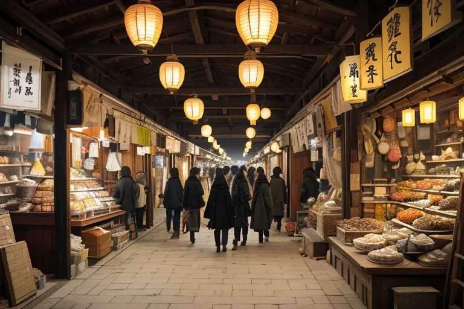
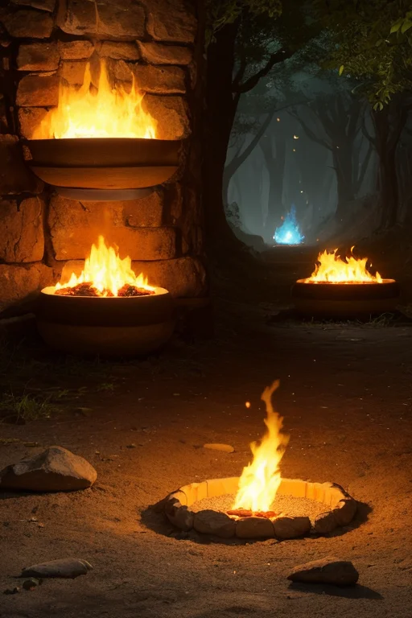
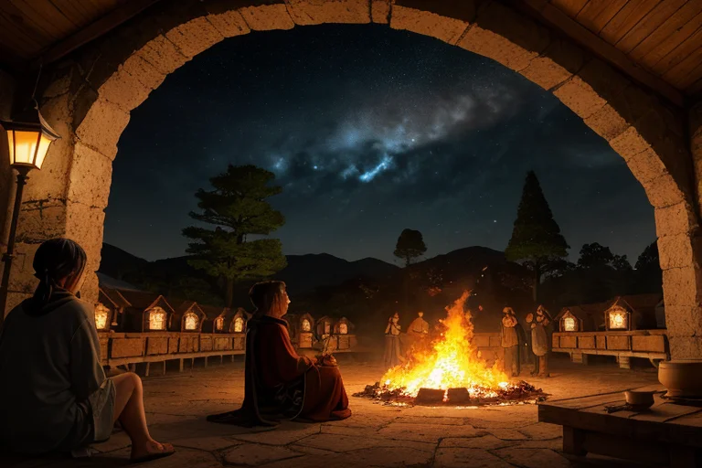
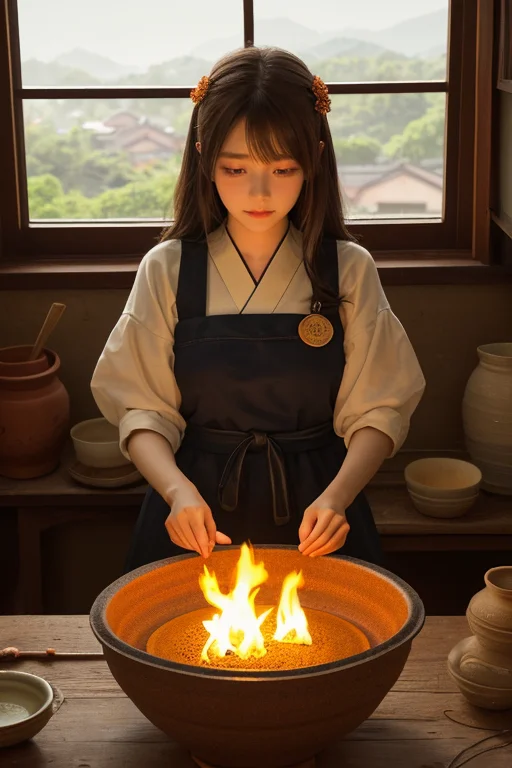
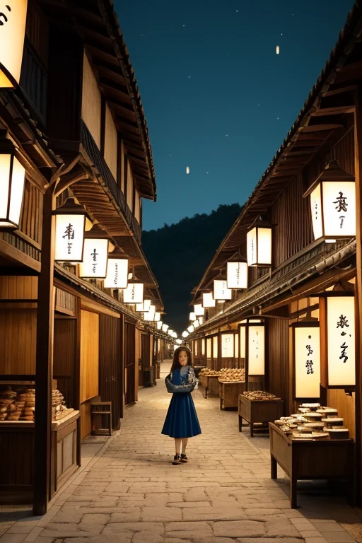

第一章 現実の佐賀
あなたはまだ気づいていない。この土地にも、王がいることを。
有田陶磁の里の通りは、春の陶器市で活気に満ちていた。色とりどりの磁器が店先に並び、訪れる人の手に取られ、光を反射する。商人の巧みな口上、買い手のためらい、値切りの声。金と物の流れが、この町の息吹となっている。その喧噪のただ中、唐津城を望む虹の松原の静寂とは対照的に、ここには人の欲望が色濃く漂う。
その一角、古びた蔵を改装したギャラリーの片隅に、一人の男が立っていた。サガリア・アンバーである。琥珀色の瞳は、賑わう通りを、しかしその奥にあるものを見つめていた。彼の目には、人々の足元、店舗の基礎、この土地そのものが持つ微かな「歪み」が映る。活気の下で、ゆっくりと蓄積される陶土の層の圧力、地中の熱の不安定な蠢き。彼は何も言わず、ただそこに立つ。
彼の肩には、小さな黒い影が二つ。主席妖精アンベラと、アリタナだ。彼女たちも沈黙を守り、主人の静かな観察に同調している。情熱は市場の喧噪の中にあるが、彼の内に燃えるものは、それとは別種の持続する火だった。

第二章 歪みの兆候
有田陶磁の里の喧噪は、陶器市の終了と共に潮が引くように去り、日常の静けさが戻ってきた。しかし、サガリア・アンバーの目には、別の「うねり」が残っていた。観光バスの往来が減り、大型トラックが土を運ぶ道に、微細なひびが走っている。それは物理的な亀裂ではなく、土地の「疲れ」の兆候だった。活発な経済活動が、地中の陶土層に予期せぬ圧力を加え、地熱の流れに微妙な乱れを生じさせ始めている。
彼は唐津城の石垣の下に佇んだ。海からの風が松原を抜け、城壁に当たる。その風の音の中に、地盤の微かな軋みを聞き分ける。吉野ヶ里の遺跡が三千年の眠りを続けるように、この土地の下でも、何かがゆっくりと目覚めようとしている――あるいは、歪もうとしている。
肩のアンベラが微かに震えた。陶土の妖精は、地中の圧力変化を最も敏感に感じ取る。アリタナは無言で、主人の視線の先、地面の下を見つめていた。活気がもたらす歪み。静かな情熱が、土地そのものに負荷をかけていることに、彼は気づき始めていた。

第三章 王の葛藤
有田陶磁の里の窯元は、夜を徹して炎を燃やし続けていた。注文に応えるための連続焼成。それは土地の活気であり、人々の情熱の証だった。サガリア・アンバーは、その熱の奔流の傍らに立ち、掌をかざした。地中を流れるマグマの動きが、この活発な人間の営みと呼応するように、僅かに加速しているのを感じる。
「止めるべきか」
彼は呟いた。人間の営みを制限することは、彼の役目ではない。歪みを調整することこそが使命だ。しかし、この活気そのものが、新たな歪みの種を育てている。陶土の妖精アンベラは、彼の肩で微かに首を振った。止めるな、と。アリタナは、窯の炎を見つめ、その熱波が大気を歪ませる様を無言で指し示す。
彼は目を閉じた。吉野ヶ里の遺跡が三千年、静かに土に還ったように、全ての熱情はいずれ冷める。だが、今この瞬間、人々が燃やす情熱を前に、ただ調整者であることの無力さが、彼の内なる静火を揺さぶった。守護とは、時に見守ることなのか。それとも――。

第四章 妖精との対話
「商いは、歪みの種ではありません」アンベラが初めて、長い沈黙を破った。その声は、窯の中でゆっくりと膨らむ釉薬の泡のようだった。「陶土が炎に出会い、形を変える。それは破壊ではなく、約束の履行です。人が金を払い、物を得る。その循環そのものが、この土地の静かな呼吸です」
アリタナが頷く。「歪みは、呼吸が乱れる時。焦りが窯の温度を狂わせ、欲望が約束を歪ませる時。私たちはその熱波を調整するだけ」
王は、窓の外、バルーンフェスタの準備で慌ただしい街を見下ろした。人々の熱気は、確かに歪みを孕んでいた。しかし、アンベラの言う通り、それは悪ではない。有田の町並みを流れる観光客の波、伊万里焼の輸出を扱う商社の電光掲示、嬉野の茶畑で黙々と手を動かす人々。全てが、長い時間をかけて培われた「約束」の上に成り立つ営みだった。
「情熱が冷めれば、約束は果たされず、土地は冷える」アンベラが呟いた。「私たちが守るべきは、その持続です。たとえ、微かな炎であっても」
王は、自らの内に灯る静火が、この土地の持続する営みそのものだと、初めて理解した。守護とは、消すことではなく、燃やし続けること。たとえ、その炎が、時に歪みを生むとしても。

第五章 微調整と余韻
有田陶磁の里を訪れる観光客の波は、絶え間なく続いていた。彼らは窯元を巡り、白磁に映る青の文様に息を呑み、土産物屋で器を手に取る。その一人一人の選択、足を止める場所、買うか買わないかの一瞬の判断の全てに、微かな「歪み」が生じていた。それは、あまりに膨大な人の欲望と偶然が交錯する場所ゆえの、ごく自然な軋みだ。
王は、その歪みを調整する。観光バスの到着時刻を三十秒遅らせ、混雑のピークを分散させる。客が迷う交差点で、風に乗せてほのかな陶土の香りを流し、正しい方向へと導く。それは、誰にも気付かれない。ただ、人々の流れがほんの少し滑らかになり、店主の焦りが半減し、割れ物を落とす事故が一件、起こらなくなるだけだ。
アンベラが王の隣に立つ。「情熱は、持続しています」
「ええ」王は答えた。彼の内なる静火は、この土地の持続する営みそのものだった。守護とは、消すことではなく、燃やし続けること。たとえ、その炎が時に歪みを生むとしても。彼はもう、感情という名の静火を、恐れてはいなかった。
あなたの町にも、王がいる。